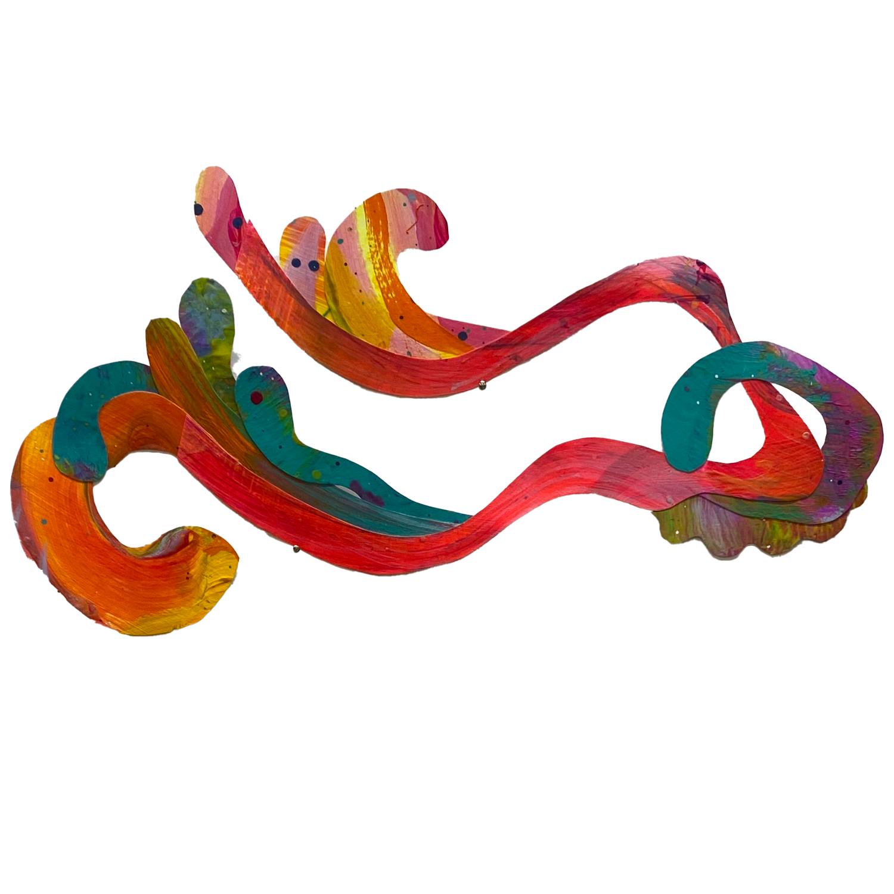
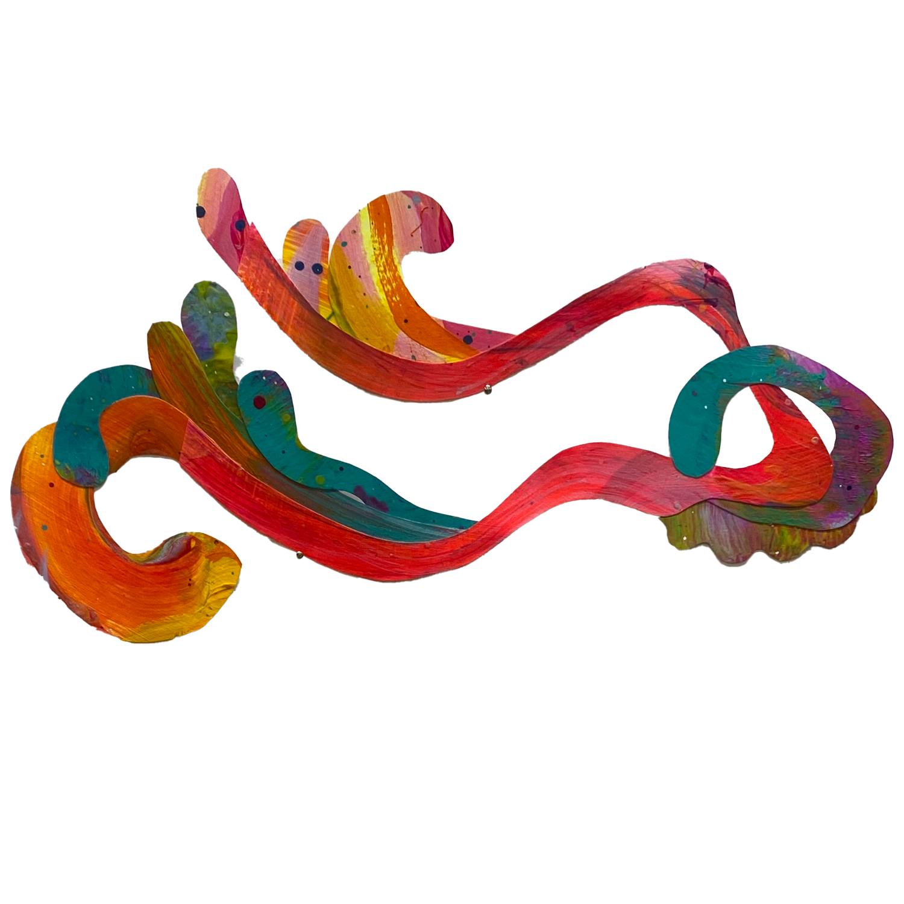
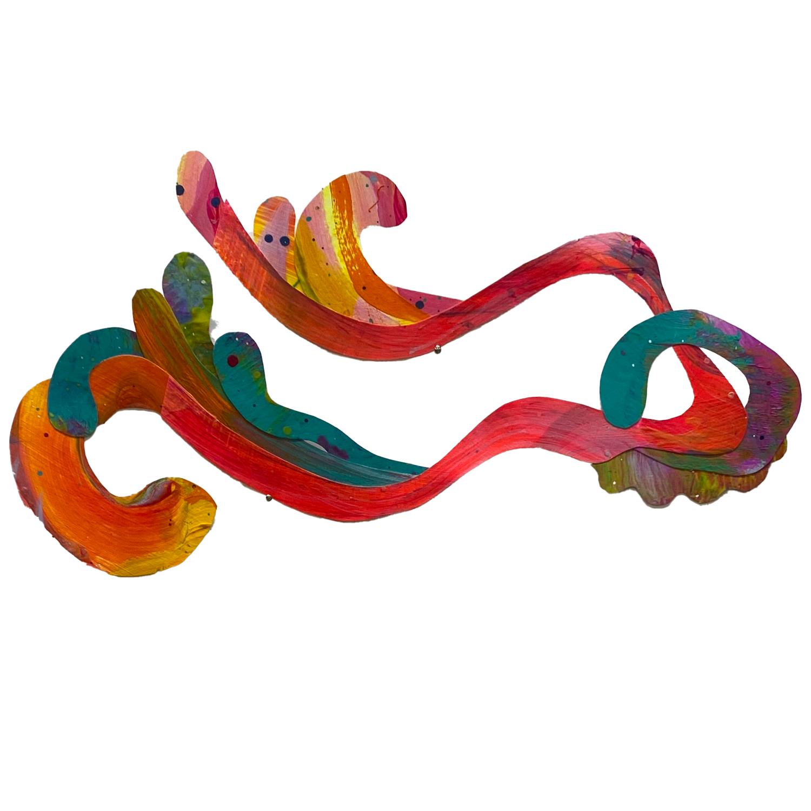

In my art, I don’t care about what others think. Quite selfishly, I make
art that makes me happy. I make art that feels free. Most of my life I
have questioned what type of artist I am. Am I a painter? A drawer?? A
grphic designer??? If you thought that I was going to share what type of
artist I am - I’m not. Because, quite frankly I don’t know, and I am
content with not knowing. My main goal as an artist to continue trying new
materials and allowing them to be the guide for the end result. This
amplifies the idea that valuing the exploratory stage allows me to have
fun and make work that I enjoy. And, if my work makes me happy, I am more
encouraged to continue creating, which becomes an endless cycle of being a
happy artist with happy art.

Dancing Collages, 2023, Acrylic
It's Bath Time, 2022, Gouache
I Wish I Was Still You, 2022, Acrylic and Modeling Paste
Luminary, 2021, Gouache
Many of my paintings focus on the exploration of self - who am I and who
do I want to be. These are the main questions I ask myself and I use brush
strokes, material, and colors to explore the answers to those questions.
 
